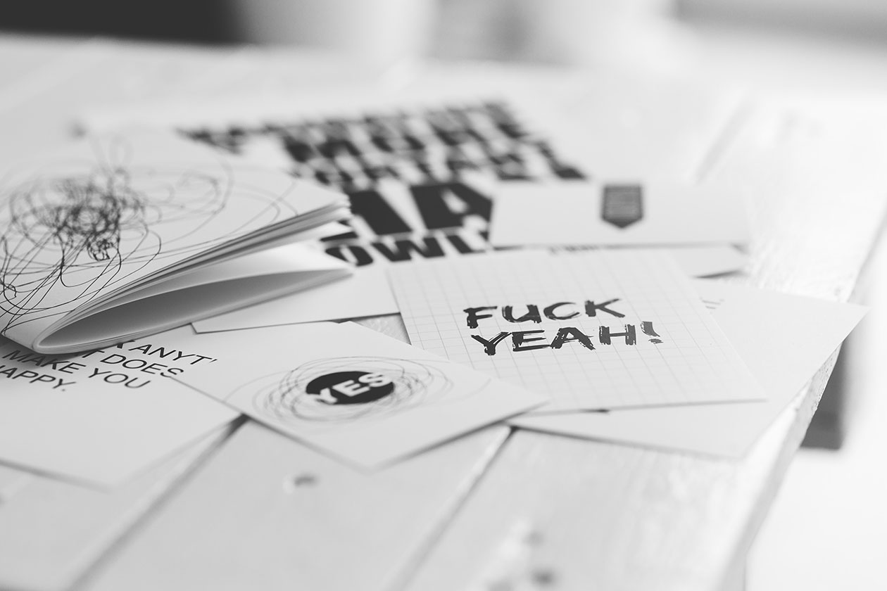

My favorite sites to download free and commercial fonts
One of my favorite parts of starting a design is choosing the font. Although for me selecting the font can be time consuming, it is always exciting. A few years ago I didn't have so many choices for free and paid fonts to get online, but things have changed and there are a lot of popular and other not so popular font foundries. So here I list some sites to get free fonts and some to get commercial ones.
Free fonts
Free fonts are great, but what I often see is that because they are free, some popular fonts are heavily used and you can see them on many designs. However, that's the price you have to pay for using a free font (lol).
FontsquirrelBesides their super useful webfont generator, they have a somewhat short but good list of free fonts ready for the web.
Smashing MagazineThey have a team of people that write about design, web development and free fonts too, which is great because they compile lists of free font foundries that can be helpful to skim through.
BehanceBehance has some of the best designers uploading their work there. Font designers often publish some free fonts on Behance to get some notoriety, and if you browser a little you will find some pretty cool free fonts.
DeviantArtI know, probably not your first choice, but over the years some good emerging font designers have published little font treasures on deviantArt. If you browse around a little you will probably find a couple of really good fonts free to download.
Google FontsGoogle fonts is on this list just in case you wanted a place to get free fonts for your web project. You can either copy and paste the link for your font (or fonts) or donwload them and host it on your web server. The fonts are free and open source.
Commercial fonts
The thing is that good font designers will eventually charge for the fonts they create, and that is good, because some of the best fonts I've used are commercial. Sometimes, paying for a font that makes the customer and you happy is worth the money. Most of the times you also have different styles of the same font to buy; at an additional charge you can have the font style (bold, italic, etc) that perfectly suits your graphic design needs.
Atipo FoundryThey have a small but consistent and nice selection of fonts. They have free downloads for some of their fonts. Check them out.
UI8Besides having a small yet good font selection, the small team behind UI8 sells UI kits, wireframes, mockups and more for you to start or enhance your design. I recommend you take a look at their whole website.
TypeNetworkThis is a 'type foundry network' as it is. It enlgobes serveral small foundries with a good array of nicely designed fonts.
Commercial TypeI recently purchared their 'Austin News' font for a reasonable price. It was a nice font :) I suggest you check them out.
DstypeThey have a medium-sized font library with some good looking fonts, including some icon fonts (in case you're into using icon fonts). Most of their fonts have a lot of styles for you to buy, that is always good.
You should also check these out as soon as you have some spare time: A2-Type, Darden Studio, Just Another Foundry, Lineto, Colophon Foundry, HVD Fonts.
The end.